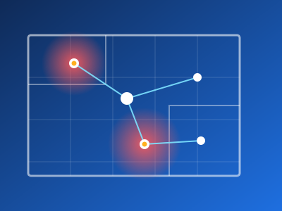

AI Fall-Risk Mapping for Care Facilities
A concept project: teaching a model to spot the parts of a building most likely to cause a fall.
The idea is a tool that studies a facility's floor plans and walkthrough photos and marks the zones most likely to cause falls — dim lighting, narrow corridors, missing grab bars, uneven flooring, or poor sightlines near stairs.
How it would work:
- DataLabeled facility photos and floor plans marking known hazard types
- ModelAn image-recognition model trained to detect those hazard types
- OutputA colour-coded risk map for each floor, ranked by severity
It would turn a site visit into a ranked list of accessibility fixes — connecting directly to the eldercare modernization work in my other project.
This is a concept I developed for my MS in AI coursework — no dataset or working prototype exists yet.